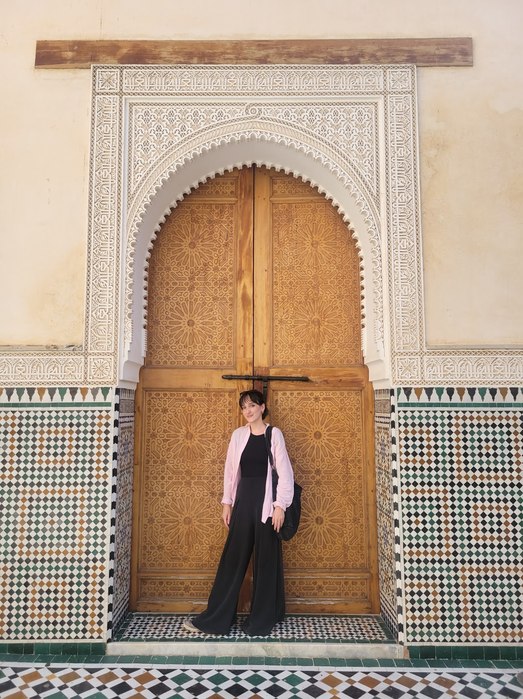

More about me
Trignac — France
My journey
Hi, I'm Sarah Lefeuvre — nice to meet you!
My journey into UX/UI started unexpectedly after a conversation with a designer sparked my curiosity. The blend of empathy, problem-solving, and creativity immediately felt like the perfect fit, and I haven't looked back since.
Before transitioning into design, I worked as a Beauty Advisor, where I developed a strong appreciation for understanding people's needs and creating positive experiences — skills that continue to shape my design process today.
I'm curious by nature and enjoy working on a wide variety of digital products. What excites me most is the opportunity to understand people's needs and transform complex challenges into simple, intuitive experiences.

Interests
When I'm away from Figma, you'll probably find me learning a new language, drawing, writing, or planning my next trip.
Bonus
I've started designing my own websites at the age of 12, after discovering text-based role-playing game. To this day, it remains one of my greatest passions!
About this website
I've designed this website on Figma and developed it with Codex. The typography used across the whole website is Geist, and the header is VT323.